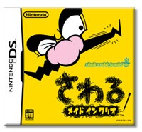

|  |
 |
|
発売日：2004年12月2日
希望小売価格：4,800円（税込）
ジャンル：さわる瞬間アクション
プレイ人数：１人
>> 公式ホームページへ
|
クリスマスパーティーを友達と開く、なんて人もかなり多いはず。そんなあなたはギャグや瞬間芸の技をいまのうちにせっせと磨いておくことをオススメ。でもどうやって？ いえいえ心配ご無用、『さわるメイドインワリオ』におまかせあれ！
これまで瞬間的に遊ぶプチゲームの世界を発展させてきた同シリーズですが、ゲームボーイアドバンスでリリースされた『まわるメイドインワリオ』で“本体を回して遊ぶ”新境地を開拓。
そしてニューハードでのメイドインワリオは“さわる”をコンセプトに、ボタン入力ナシという未知の世界へ。思わず吹き出してしまうプチゲームの数々、ここで笑いのセンスを磨けること間違いなし！
|
ワリオシリーズといえば、ナンセンスだったりシュールだったり勢いだけだったり、とにかく「え!?」と画面を見直してしまうような笑いの数々で埋め尽くされていますが、その流れは今作でも健在。一瞬、あ然としてから吹き出してしまう…その繰り返しに、タッチペン入力やマイク入力で挑みます。
「くしゃみさせろ！」と出たら、こよりを動かして鼻の穴をコチョコチョ。みごとハックション！ となったらクリア。ハイつぎ〜。という感じで、どんどんゲームをこなしていきましょう。入力方法が違うと、かなり新鮮。でも変わらず楽しい、もっと楽しい！
|
基本的に１人用ですが、遊んでいる人のうしろでそのままリアルにゲーム！ というのも面白いかも。いくつか道具を用意しておいて、プレイしている人がゲーム内の「○○しろ！」という指令を出すと、うしろの人たちはパッと道具を取ってアクション！ ジャンケン感覚、瞬間芸感覚での遊びで、パーティーが盛り上がること確実です。
ワイワイ遊びたい人は、迷わず『さわるメイドインワリオ』をどうぞ。
|
|